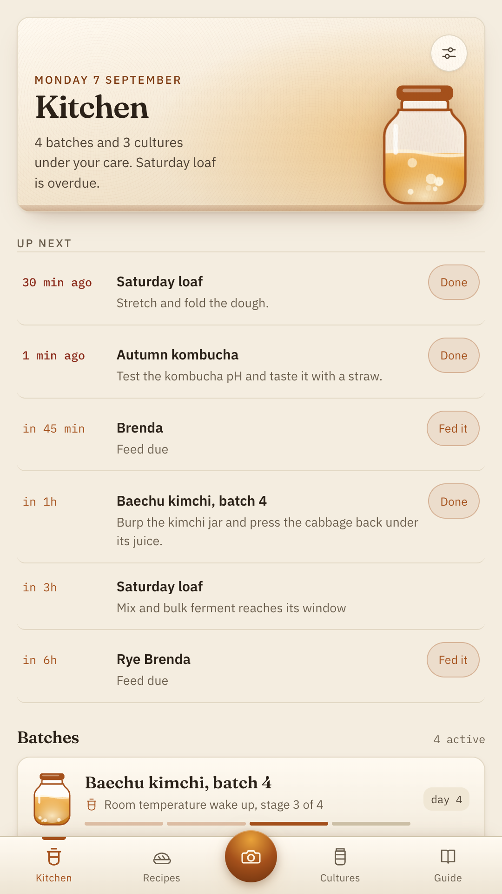
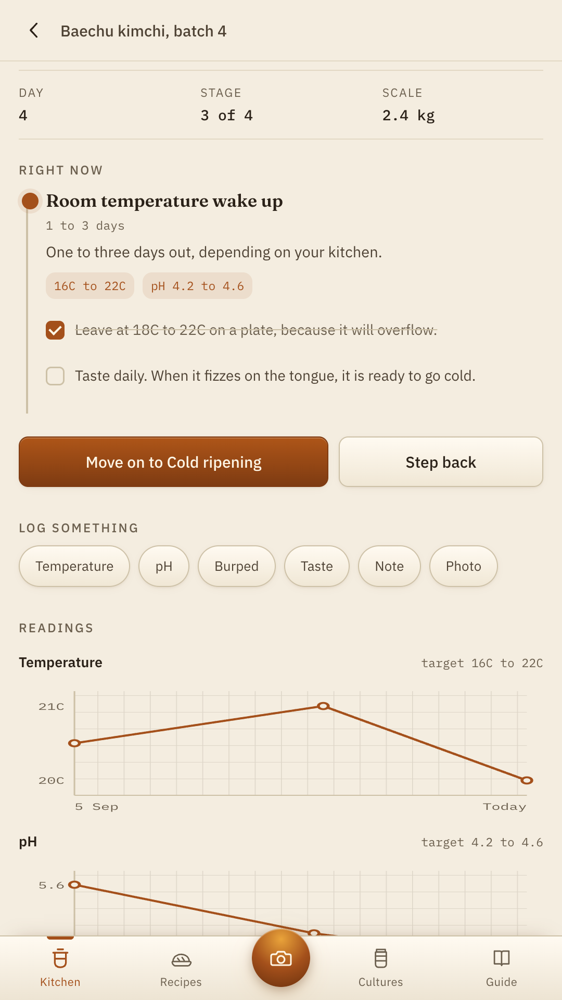
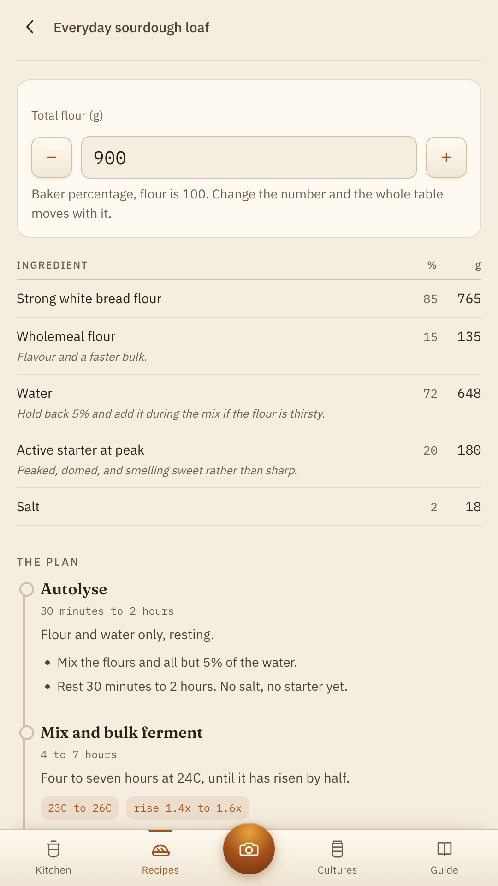
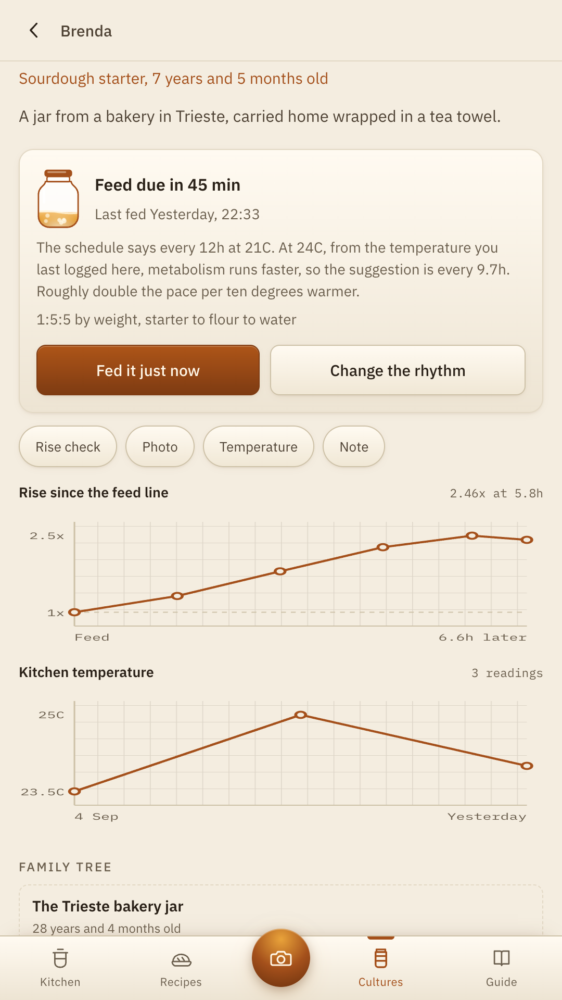
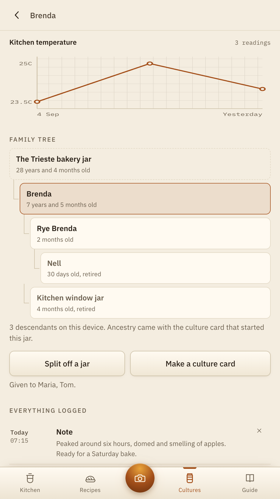
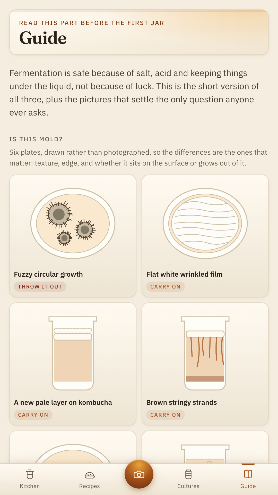

Fermentation is a multi day experiment, and most people run it on a sticky note and a rubber band. Ferment gives every batch a real timeline, every culture a real age, and every reading somewhere to go.
Get it on Google PlaySourdough, kimchi, kombucha, kraut, hot sauce and mead. Free, complete, and it works with the phone in airplane mode.

Nobody needs another timer. They need to know it is normal.
Is this mold. When do I feed it. Is it supposed to smell like that. Those are the three questions, they are asked a thousand times a day in fermentation forums, and every one of them is really a question about where you are in a process. So Ferment tells you where you are.

Every recipe in Ferment is written as a stage plan, so a batch started from one arrives with its own schedule, its own targets and its own reminders already in place.
Brine, pack, ferment, cold store. Each with the window it usually takes, the jobs it needs, and the numbers worth watching while it runs.
Burp prompts cluster in the loud first days and then stop on their own. A stage tells you when it reaches its window and again if it runs past it.
A starter fed every 12 hours at 21 degrees wants feeding every 8 and a half in a 26 degree kitchen. Log a temperature and the suggestion moves, and the app shows its working.
Temperature, pH, gravity and brine strength, plotted on grid paper against the target band for the stage you are actually in.
Percentages that scale to the jar you own, a rise chart you build yourself, and a family tree for a culture that has outlived several of your phones.



Home fermentation is safe because of salt, acid and keeping things under the liquid. Ferment says so in the places where it matters, and it draws the pictures that settle the argument.
Ferment is a notebook for a hobby. It is not a food safety authority, it makes no health or nutrition claims of any kind, and it cannot see inside your jar. Every triage page ends the same way it should: if you are not sure, throw it out.

The promises, and how to check them
Ferment does not request the internet permission, which you can verify on the Play listing before you install it. Android will not let it open a connection at all, so nothing you photograph, measure or write can be sent anywhere. Point a packet sniffer at it. That is an invitation.
There is no sign up, no cloud and no analytics. Batches, cultures, readings and photographs live in this phone's private storage. Export the notebook as plain text or a JSON backup whenever you want, restore it on a new phone, or erase everything in two taps.
Every feature is in the free app. No subscription, no in app purchase, no ads, no trial and no locked batch count. A hobby that is mostly cabbage and patience should not carry a recurring bill.
There is no computer vision in Ferment and no model looking at your jar. A rise measurement is you dragging two lines across a photograph you took, and the arithmetic between them. The value is the measurement habit, and claiming more than that would be a lie.
Start with the sauerkraut. It is very hard to ruin.
Get it on Google Play